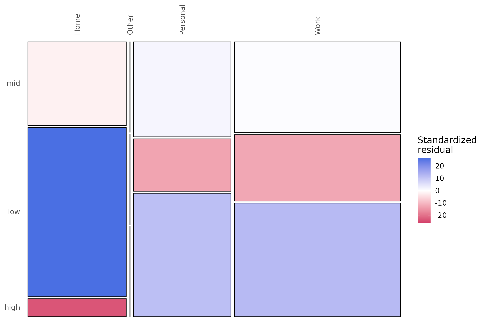

Transition Networks from Time Series: Estimation and Inference with Nestimate
Mohammed Saqr
University of Eastern FinlandSonsoles López-Pernas
University of Eastern FinlandManuel J. Gómez
University of MurciaSource:
vignettes/nestimate-workflow.Rmd
nestimate-workflow.RmdIntroduction
A numeric time series records the level of a quantity over time. A transition network records something different: how a system moves between a small number of qualitative states, with nodes for the states and directed edges for the probability of passing from one to the next. The two descriptions answer different questions. The series says how high a measurement was; the network says what a measurement is likely to be followed by. Recovering the second from the first takes two steps, reducing the continuous series to a sequence of states and estimating the state-to-state transitions, and then a third that is easy to skip: deciding what such a model may legitimately claim.
The tsn package performs the first two steps in a
single call and hands the result to Nestimate, which
supplies the third. ts_tna() discretizes a series,
estimates the transition network, and returns a native Nestimate model,
so Nestimate’s descriptive and inferential verbs apply to it with no
conversion step in between. This vignette follows one analysis through
the whole path: building the model, reading its structure, and, where
the data support it, testing that structure with bootstrap confidence
intervals, centrality stability, a Markov-order test, and a permutation
comparison of two periods.
The distinction between description and inference organizes everything below. Descriptive summaries such as centralities, state distributions, entropy, and pruning ask what a fitted network looks like, and a network fitted to a single series answers them. Inference asks how far the estimate would move under a different sample, and a single series is a single sample: there is nothing to resample. The dividing line is the unit of analysis, and knowing where it falls is what keeps a transition model from being read for more than it can support.
From measurements to a model
ts_tna() takes a data frame and the name of one numeric
column, cuts that column into states, and estimates the transition
network in one call. Here it runs on the first 200 observations of the
pleasure rating from the motivation study, an
intensive-longitudinal record of momentary experience.
pleasure <- head(motivation, 200)
model <- ts_tna(
pleasure,
series = "pleasure",
labels = c("low", "mid", "high")
)
model
#> Transition Network (relative probabilities) [directed]
#> Weights: [0.278, 0.417] | mean: 0.333
#>
#> Weight matrix:
#> low mid high
#> low 0.403 0.313 0.284
#> mid 0.278 0.417 0.306
#> high 0.333 0.367 0.300
#>
#> Initial probabilities:
#> high 1.000 ████████████████████████████████████████
#> low 0.000
#> mid 0.000The printed object is the complete model: a row-stochastic weight matrix whose entry (i, j) is the probability of moving to state j given that the system is currently in state i, together with the initial-state distribution. Each row sums to one because from any state the process must go somewhere.
The bridge: this object is a Nestimate model
Everything that follows rests on one property of the returned object.
class(model)
#> [1] "ts_tna" "netobject" "cograph_network"ts_tna() does not return a private structure that must
be converted before Nestimate can read it. It returns an object that
inherits from netobject, Nestimate’s core
network class, and Nestimate’s verbs dispatch on that class directly.
There is no export step and no adapter call between the model and the
tests applied to it, which is what lets a single analysis move from
construction to inference without leaving the object behind.
Four constructors, one interface
The same discretized sequence supports four definitions of an edge,
and the four constructors take identical arguments and return the same
class. ts_tna() gives relative frequencies, so an edge is
the conditional probability of the next state. ts_ftna()
gives the raw transition counts behind those probabilities.
ts_atna() applies attention weighting, and
ts_cna() counts undirected co-occurrence rather than
directed movement. Changing the edge definition means changing only the
constructor.
ts_ftna(pleasure, series = "pleasure", labels = c("low", "mid", "high"))
#> Transition Network (frequency counts) [directed]
#> Weights: [18.000, 30.000] | mean: 22.111
#>
#> Weight matrix:
#> low mid high
#> low 27 21 19
#> mid 20 30 22
#> high 20 22 18
#>
#> Initial probabilities:
#> high 1.000 ████████████████████████████████████████
#> low 0.000
#> mid 0.000The remainder of the vignette uses ts_tna(), because the
inferential tests are written for probabilities.
One series, and what it can support
Asking a single-series model for a bootstrap returns a warning rather than a result:
A network with one long sequence is not recommended and can’t be validated using bootstrap and other confirmatory testings.
The warning is correct. A bootstrap resamples sequences to estimate how far a quantity would move under a different sample of them; one series is one sequence, so there is nothing to resample and no sampling distribution to form. The permutation and stability tests rest on the same logic.
This is a statement about the unit of analysis, not a dead end. A
long series contains many transitions; what it lacks is a way to group
them into units that can be resampled. The segment argument
supplies that unit by cutting the series into shorter blocks, each
treated as its own sequence. This is the block bootstrap, and tsn
provides its two standard forms.
The series below is one participant’s 299 daily step counts. Two
features of the call matter before the segmenting itself. States are cut
at 5,000 and 10,000 steps with discretization = "threshold"
rather than at the default tertiles, so the states mean the same thing
outside this sample; the next section returns to why that matters. And
segmentation is applied after discretization, so every block
inherits the same cut points and no block is ever discretized against
itself.
walkers <- subset(steps, !is.na(steps))
one_walker <- subset(walkers, id == 193)
whole <- ts_tna(
one_walker,
value = "steps",
time = "day",
discretization = "threshold",
breaks = c(5000, 10000),
labels = c("sedentary", "moderate", "active")
)Partitioning cuts the 299 observations into consecutive,
non-overlapping blocks. At segment = 10 there are thirty of
them.
blocks <- ts_tna(
one_walker,
value = "steps",
time = "day",
segment = 10,
discretization = "threshold",
breaks = c(5000, 10000),
labels = c("sedentary", "moderate", "active")
)
bootstrap_network(blocks, iter = 500, seed = 2024)
#> Edge Mean 95% CI p
#> -----------------------------------------------
#> active → moderate 0.558 [0.457, 0.653] **
#> moderate → moderate 0.437 [0.336, 0.525] *
#>
#> Bootstrap Network [Transition Network (relative) | directed]
#> Iterations : 500 | Nodes : 3
#> Edges : 2 significant / 9 total
#> CI : 95% | Inference: stability | CR [0.75, 1.25]Thirty sequences, and the bootstrap now runs. Partitioning is not free: every cut destroys the transition that straddles it, so thirty blocks cost roughly thirty of the 298 transitions and the estimate shifts slightly.
Sliding the window instead of partitioning keeps all of them. At
segment = 2, overlap = TRUE the blocks are the consecutive
lag-1 pairs, so every transition appears exactly once and the network is
identical to the unsegmented one.
lag_one <- ts_tna(
one_walker,
value = "steps",
time = "day",
segment = 2,
overlap = TRUE,
discretization = "threshold",
breaks = c(5000, 10000),
labels = c("sedentary", "moderate", "active")
)
all.equal(as.matrix(lag_one), as.matrix(whole))
#> [1] TRUE
bootstrap_network(lag_one, iter = 500, seed = 2024)
#> Edge Mean 95% CI p
#> -----------------------------------------------
#> active → moderate 0.559 [0.459, 0.659] **
#> moderate → moderate 0.426 [0.344, 0.504] **
#> moderate → active 0.359 [0.285, 0.439] *
#>
#> Bootstrap Network [Transition Network (relative) | directed]
#> Iterations : 500 | Nodes : 3
#> Edges : 3 significant / 9 total
#> CI : 95% | Inference: stability | CR [0.75, 1.25]The two schemes trade precision against independence. Sliding blocks preserve the point estimate exactly, yield the most units, and tend to give narrower intervals: a mean width of 0.18 here against 0.21 for the partitioned blocks, narrow enough to call a third edge significant where partitioning calls two. The tendency is not a guarantee, since two of the nine edges come out wider. And the narrowness carries a cost. Overlapping blocks share observations, so they are not independent, and resampling lag-1 pairs assumes exactly the first-order Markov property the model itself assumes. That is the assumption the Markov-order test below rejects for these data, which makes those intervals optimistic.
Partitioned blocks are the more conservative choice. A block preserves whatever dependence exists inside it, so structure beyond one lag survives resampling, at the price of the boundary transitions lost to the cuts. Blocks of 10 to 30 retain 90% to 97% of the transitions, which is usually the right trade; blocks of 2 retain only half and are better avoided.
None of this manufactures information. Segmenting a single series asks how stable one person’s own dynamics are, and says nothing about anyone else. A claim about people in general needs people in general, so the rest of the vignette uses all 151 of them.
Choosing states that mean something
The default discretization = "quantile" cuts at the
tertiles, forcing each of the three states to hold a third of the
observations, so the state sizes carry no information, by construction.
That is why every model built from the steps data uses
fixed thresholds of 5,000 and 10,000 steps instead. Fixed breaks make
the states interpretable outside the sample, and they give every model
one shared alphabet, which is what makes the period comparison below
legitimate. (The grouped pleasure model at the end keeps
the quantile default; grouping pools the series before cutting it, so
its groups share an alphabet without breaks being named.)
walk_model <- ts_tna(
walkers,
value = "steps",
id = "id",
time = "day",
discretization = "threshold",
breaks = c(5000, 10000),
labels = c("sedentary", "moderate", "active")
)
walk_model
#> Transition Network (relative probabilities) [directed]
#> Weights: [0.062, 0.619] | mean: 0.333
#>
#> Weight matrix:
#> sedentary moderate active
#> sedentary 0.353 0.445 0.202
#> moderate 0.154 0.501 0.345
#> active 0.062 0.320 0.619
#>
#> Initial probabilities:
#> active 0.576 ████████████████████████████████████████
#> moderate 0.311 ██████████████████████
#> sedentary 0.113 ████████The states now mean something outside the data, the same cut points apply to every comparison made later, and the state distribution is worth reading.
state_distribution(walk_model)
#> group state count proportion
#> 1 all active 13921 0.4484425
#> 2 all moderate 12776 0.4115582
#> 3 all sedentary 4346 0.1399994Every state is strongly self-preferring, and an active day is the most persistent of all at 0.62: activity, once reached, tends to continue. Step counts show marked day-to-day inertia.
One network per person
The pooled model estimates a single network across everyone.
series_networks() splits it into one complete model per
participant, each rebuilt on the same alphabet so node sets stay aligned
and comparable.
per_person <- series_networks(walk_model)
head(summary(per_person))
#> series type observations states edges
#> 1 35 tna 295 3 6
#> 2 37 tna 278 3 9
#> 3 47 tna 297 3 9
#> 4 57 tna 239 3 9
#> 5 58 tna 176 3 9
#> 6 70 tna 257 3 9Each row indexes a full ts_tna model that prints and
plots on its own: the models are the list elements, and this is the tidy
index over them. Because the cut points are fixed step counts rather
than sample quantiles, a participant’s personal network describes their
own activity, not their rank within the sample.
Describing the model
Centrality
net_centrality(walk_model)
#> centralities computed excluding loops (diagonal). Pass `loops = TRUE` to include self-transitions.
#> state InStrength Betweenness Diffusion
#> sedentary sedentary 0.2152510 0 1.0000000
#> moderate moderate 0.7650336 1 0.4116171
#> active active 0.5470912 0 0.0000000The message notes that centralities exclude self-transitions by
default, which matters for a transition network: the diagonal is usually
the largest entry, so a state can be highly persistent while receiving
little traffic from elsewhere. Excluding the diagonal measures how
central a state is to movement between states rather than to
staying put. Passing loops = TRUE includes it.
How much of the sequence is structure, and how much is noise
transition_entropy(walk_model)
#> Transition Entropy (3 states, bits; ceiling = 1.585)
#>
#> raw normalised
#> Entropy rate h(P) = 1.346 bits 0.849
#> Stationary H(pi) = 1.444 bits 0.911
#> Redundancy H(pi)-h = 0.098 bits 0.068
#>
#> Normalised: h(P) and H(pi) are raw / log_2(n_states) (0 = deterministic, 1 = uniform);
#> redundancy is the relative redundancy (H(pi) - h(P)) / H(pi), not raw / log_2(n_states).The entropy rate is normalized against log2(n_states),
so 0 is a perfectly deterministic process and 1 means every next state
is equally likely from wherever the process currently sits. A value of 1
requires more than an uninformative current state: a lopsided but
state-independent process still scores well below it. Cut at the
tertiles, these same step counts score 0.93; cut at 5,000 and 10,000
they score 0.85. The cut points are not cosmetic: they decide how much
structure is left to find.
Pruning
Not every edge deserves a place in the picture.
net_prune() returns a model of the same class with weak
edges removed, so its result flows straight back into any verb
above.
net_prune(walk_model, method = "threshold", threshold = 0.3)
#> Transition Network (relative probabilities) [directed]
#> Weights: [0.320, 0.619] | mean: 0.430
#>
#> Weight matrix:
#> sedentary moderate active
#> sedentary 0.353 0.445 0.000
#> moderate 0.000 0.501 0.345
#> active 0.000 0.320 0.619
#>
#> Initial probabilities:
#> active 0.576 ████████████████████████████████████████
#> moderate 0.311 ██████████████████████
#> sedentary 0.113 ████████Three edges fall below the threshold: every route into
sedentary from a higher state, together with the direct leap from
sedentary to active. What survives says that a sedentary day is harder
to fall into than to climb out of. The
sedentary -> moderate edge is a strong 0.445, while
nothing descends into sedentary above 0.3.
Prune after testing rather than before, however. A threshold ranks edges by size, and size is not the same as interest: a small but reliably estimated edge can matter more than a large but uncertain one.
Bootstrap: which edges survive resampling?
bootstrap_network() resamples the sequences with
replacement, re-estimates the network on each resample, and reports a
confidence interval for every edge.
boot <- bootstrap_network(walk_model, iter = 200, seed = 2024)
boot
#> Edge Mean 95% CI p
#> -----------------------------------------------
#> active → active 0.618 [0.585, 0.648] **
#> moderate → moderate 0.500 [0.478, 0.523] **
#> sedentary → moderate 0.444 [0.419, 0.469] **
#> sedentary → sedentary 0.353 [0.323, 0.386] **
#> moderate → active 0.346 [0.318, 0.373] **
#> ... and 4 more significant edges
#>
#> Bootstrap Network [Transition Network (relative) | directed]
#> Iterations : 200 | Nodes : 3
#> Edges : 9 significant / 9 total
#> CI : 95% | Inference: stability | CR [0.75, 1.25]summary() returns the tidy, one-row-per-edge table.
summary(boot)
#> from to weight mean sd p_value sig
#> 1 sedentary sedentary 0.35281837 0.35345581 0.016363187 0.004975124 TRUE
#> 2 sedentary moderate 0.44514034 0.44378997 0.012517516 0.004975124 TRUE
#> 3 sedentary active 0.20204129 0.20275421 0.012723224 0.004975124 TRUE
#> 4 moderate sedentary 0.15365259 0.15382362 0.008219952 0.004975124 TRUE
#> 5 moderate moderate 0.50129748 0.50036003 0.011436886 0.004975124 TRUE
#> 6 moderate active 0.34504993 0.34581635 0.014524197 0.004975124 TRUE
#> 7 active sedentary 0.06159838 0.06212676 0.005251614 0.014925373 TRUE
#> 8 active moderate 0.31989325 0.31996300 0.011000596 0.004975124 TRUE
#> 9 active active 0.61850837 0.61791024 0.014531904 0.004975124 TRUE
#> ci_lower ci_upper cr_lower cr_upper
#> 1 0.32318763 0.3856584 0.26461378 0.44102296
#> 2 0.41903064 0.4688517 0.33385525 0.55642542
#> 3 0.17664549 0.2244967 0.15153097 0.25255161
#> 4 0.13841919 0.1697292 0.11523944 0.19206574
#> 5 0.47778672 0.5230883 0.37597311 0.62662184
#> 6 0.31847498 0.3727507 0.25878745 0.43131242
#> 7 0.05314263 0.0738917 0.04619879 0.07699798
#> 8 0.29783560 0.3433023 0.23991994 0.39986656
#> 9 0.58489465 0.6482990 0.46388128 0.77313546With 151 sequences behind it, every edge is estimated precisely and all nine survive resampling. Confidence intervals a few hundredths wide are what a large sample buys, and they are the ground on which the descriptive reading above can be reported rather than merely observed.
Stability: would the same states rank first in a smaller study?
centrality_stability() repeatedly drops a proportion of
the sequences, re-computes the centralities, and reports the largest
proportion that can be dropped while the ordering still tracks the
original, a correlation-stability coefficient.
centrality_stability(walk_model, iter = 100)
#> Centrality Stability (100 iterations, threshold = 0.7)
#> Drop proportions: 0.1, 0.2, 0.3, 0.4, 0.5, 0.6, 0.7, 0.8, 0.9
#>
#> CS-coefficients:
#> InStrength 0.90
#> OutStrength 0.90
#> Betweenness 0.90All three coefficients reach 0.90, against conventional bars of 0.5 for acceptable and 0.7 for excellent. That measures how stable the ordering is under resampling; it does not speak to whether the ordering is substantively meaningful, only to whether a smaller study would have recovered it.
Markov order: is a first-order model enough?
Every transition network here assumes the Markov property, that the next state depends on the current one and nothing earlier. That assumption is testable, by comparing the fit of models of increasing order.
markov_order_test(walk_model)
#> Markov Order Test [within-w permutation, n_perm = 500, alpha = 0.050]
#> 151 sequences / 31043 observations / 3 states
#>
#> Selected order BIC: 3 AIC: 3 permutation-LRT: 3
#>
#> order loglik AIC BIC df g2 p_permutation p_asymptotic
#> 0 -31051.63 62107.27 62123.95 NA NA NA NA
#> 1 -28961.91 57939.82 58006.57 4 4179.40 0.001996008 0.000000e+00
#> 2 -28209.20 56470.40 56687.32 12 1505.37 0.001996008 2.624960e-315
#> 3 -27901.81 55963.62 56631.07 36 614.68 0.001996008 1.933327e-106
#> significant
#> NA
#> TRUE
#> TRUE
#> TRUEThe test disagrees with the first-order model. AIC, BIC, and the permutation likelihood-ratio test all prefer a higher order, meaning yesterday carries information about tomorrow beyond what today already conveys. This does not invalidate the first-order network, but it bounds the claim: the network is a summary of one-step behaviour, not a full description of the process.
The natural follow-up is a higher-order network.
build_hon(walk_model, max_order = 2)
#> Higher-Order Network (HON)
#> Nodes: 3 (3 first-order states)
#> Edges: 9
#> Max order: 1 (requested 2)
#> Min freq: 1
#> Trajectories: 151The higher-order construction keeps every node at order 1: it finds no individual context that shifts the next-step distribution enough to justify splitting the node. The two criteria disagree because they ask different questions. The likelihood test detects aggregate improvement pooled across all sequences, while the higher-order rule applies a stricter, per-node test. Both results are real, and both are worth reporting: there is higher-order structure in aggregate, but not localized in any single state.
Comparing two periods
The tests so far describe one network. permutation()
compares two, shuffling the group labels to build a null distribution
for every edge. The steps series runs from April 2019 to
March 2020; splitting at the start of November contrasts the warmer
months with the colder ones. The two spans are unequal in length,
roughly six and a half months against four.
Both models are built with the same fixed breaks, which
matters more than it appears: had each period been discretized on its
own quantiles, the two networks would rest on different cut points, and
any difference between them could reflect the thresholds rather than
behaviour.
cutoff <- as.Date("2019-11-01")
early <- ts_tna(
subset(walkers, as.Date(day) < cutoff),
value = "steps",
id = "id",
time = "day",
discretization = "threshold",
breaks = c(5000, 10000),
labels = c("sedentary", "moderate", "active")
)
late <- ts_tna(
subset(walkers, as.Date(day) >= cutoff),
value = "steps",
id = "id",
time = "day",
discretization = "threshold",
breaks = c(5000, 10000),
labels = c("sedentary", "moderate", "active")
)
comparison <- permutation(early, late, iter = 2000, seed = 2024)
comparison
#> Permutation Test:Transition Network (relative probabilities) [directed]
#> Iterations: 2000 | Alpha: 0.05
#> Nodes: 3 | Edges tested: 9 | Significant: 0
summary(comparison)
#> from to weight_x weight_y diff effect_size p_value
#> 1 sedentary sedentary 0.34985280 0.35525154 -0.005398748 -0.18420352 0.86406797
#> 2 sedentary moderate 0.44602552 0.44395410 0.002071411 0.08267605 0.93753123
#> 3 sedentary active 0.20412169 0.20079435 0.003327337 0.15848152 0.88655672
#> 4 moderate sedentary 0.14430829 0.16225831 -0.017950026 -1.26222133 0.20589705
#> 5 moderate moderate 0.50048371 0.50224285 -0.001759131 -0.09494720 0.91554223
#> 6 moderate active 0.35520800 0.33549884 0.019709158 0.87706971 0.38030985
#> 7 active sedentary 0.05810102 0.06593238 -0.007831364 -0.93700923 0.35282359
#> 8 active moderate 0.30333977 0.33761664 -0.034276870 -1.78233216 0.07196402
#> 9 active active 0.63855921 0.59645097 0.042108234 1.75491892 0.07946027
#> sig
#> 1 FALSE
#> 2 FALSE
#> 3 FALSE
#> 4 FALSE
#> 5 FALSE
#> 6 FALSE
#> 7 FALSE
#> 8 FALSE
#> 9 FALSENone of the nine edge comparisons reaches significance; the smallest p-value is 0.07. The estimates are not identical, but no difference survives the permutation null. That is a more informative result than a scattering of small p-values would have been, because the two periods differ in how much people walked in the first place:
state_distribution(early)
#> group state count proportion
#> 1 all active 7328 0.4689620
#> 2 all moderate 6253 0.4001664
#> 3 all sedentary 2045 0.1308716
state_distribution(late)
#> group state count proportion
#> 1 all active 6593 0.4276448
#> 2 all moderate 6523 0.4231044
#> 3 all sedentary 2301 0.1492508Active days fall from 46.9% before November to 42.8% after it, and sedentary days rise. The seasonal shift is therefore plain in the composition of the states while no comparison of the transitions between them reaches significance. The estimated sedentary-to-moderate probability, for instance, is 0.446 before November and 0.444 after, with a permutation p-value of 0.94.
Two cautions bound how far that carries. Failing to reject nine tests is not the same as showing the dynamics are identical, and the two models do not rest on quite the same people: 140 participants contribute before November and 149 after, with 138 in both.
That distinction is the reason to build a transition network at all. A comparison of means or of state proportions finds the seasonal difference and stops there; the transition model asks a further question of the same population, whether the dynamics moved with the season, and finds no evidence that they did.
More than two groups: one model per context
Building two models by hand is manageable when there are two. When
the variable that separates the groups is already a column in the data,
the group argument builds one network per level in a single
call, and it scales past two, which the pairwise form does not.
The motivation study records where each measurement was
taken in task_context_type, so the pleasure ratings can be
split by context.
by_context <- ts_tna(
motivation,
series = "pleasure",
group = "task_context_type",
labels = c("low", "mid", "high")
)
by_context
#> Group Networks (4 groups, group_col: task_context_type)
#>
#> Group Nodes Edges Weights
#> Home 3 9 [0.040, 0.762]
#> Other 3 1 [1.000, 1.000]
#> Personal 3 9 [0.065, 0.664]
#> Work 3 9 [0.156, 0.518]Two things happen here that would be tedious to arrange by hand. The
states are cut from the pooled series before the split, so all
four networks rest on one set of thresholds and share a node set, the
same discipline the fixed breaks enforced earlier, applied
automatically. And the result is a Nestimate
netobject_group, so the compatible grouped verbs take it
directly: net_prune(), state_distribution(),
net_centrality(), compare_model(),
permutation(), mosaic_plot(), and their
neighbours. Not every verb applies: those needing a precision matrix or
a clustering attribute reject a transition model, and there is no
grouped plot() method, so networks are plotted one at a
time.
as.data.frame() gives the tidy view of how much data
stands behind each network:
as.data.frame(by_context, what = "groups")
#> group type sequences observations states edges
#> 1 Home tna 832 1324 3 9
#> 2 Other tna 2 3 3 1
#> 3 Personal tna 822 1309 3 9
#> 4 Work tna 976 2235 3 9The sequence counts repay a second look: Home has 1,324
observations but 832 sequences. That is not padding. A run is cut at
every change of series and at every change of group, and the
two cuts are not the same. A change of series separates measurements
that were never consecutive; a change of context falls between two
genuinely adjacent measurements, and the transition across it is
excluded from both networks because it belongs to neither context. This
study alternates context from one measurement to the next (4,871
observations form 2,632 contiguous runs), so each unbroken stretch
within a context becomes its own sequence, and a pair of measurements
separated by an intervening visit to a different context is never
counted as a transition, because it never was one.
That rule costs nothing when a group is constant within a series, which is the usual case for a condition or a cohort: each series then contributes one sequence and keeps its own ID.
state_distribution(by_context)
#> group state count proportion
#> 1 Home low 827 0.62462236
#> 2 Home mid 409 0.30891239
#> 3 Home high 88 0.06646526
#> 4 Other high 1 0.33333333
#> 5 Other low 1 0.33333333
#> 6 Other mid 1 0.33333333
#> 7 Personal high 597 0.45607334
#> 8 Personal mid 459 0.35064935
#> 9 Personal low 253 0.19327731
#> 10 Work high 938 0.41968680
#> 11 Work mid 749 0.33512304
#> 12 Work low 548 0.24519016The contexts are not alike. Pleasure is low on 62.5% of measurements taken at home and high on only 6.6% of them; personal time reverses that ordering: high on 45.6%, low on 19.3%. Work sits between the two on all three states. A mosaic plot shows the same contrast in the transition structure at a glance, one panel per context:
mosaic_plot(by_context)
Tile area encodes the transition probability from a current state (rows) to a next state (columns). The home panel is dominated by its low-to-low cell and the personal panel by its high-to-high cell, so the difference in level between the contexts reappears as a difference in persistence: wherever pleasure tends to be, it tends to stay.
Because every network shares an alphabet, two of them can be set side by side and selected by name:
compare_model(by_context, i = "Home", j = "Work")
#> Network comparison
#> ==================
#> Summary metrics:
#> category metric value
#> Weight Deviations Mean Abs. Diff. 0.2318
#> Weight Deviations Median Abs. Diff. 0.2503
#> Weight Deviations RMS Diff. 0.2581
#> Weight Deviations Max Abs. Diff. 0.3699
#> Weight Deviations Rel. Mean Abs. Diff. 0.6953
#> Weight Deviations CV Ratio 2.268
#> Correlations Pearson -0.2137
#> Correlations Spearman -0.2167
#> Correlations Kendall -0.1111
#> Correlations Distance 0.2513
#> Dissimilarities Euclidean 0.7743
#> Dissimilarities Manhattan 2.086
#> Dissimilarities Canberra 3.477
#> Dissimilarities Bray-Curtis 0.3477
#> Dissimilarities Frobenius 0.6322
#> Similarities Cosine 0.7693
#> Similarities Jaccard 0.4841
#> Similarities Dice 0.6523
#> Similarities Overlap 0.6523
#> Similarities RV 0.6594
#> Pattern Similarities Rank Agreement 0.8333
#> Pattern Similarities Sign Agreement 1
#>
#> Network metrics (x vs y):
#> metric x y
#> Node Count 3 3
#> Edge Count 9 9
#> Network Density 1 1
#> Mean Distance 0.2697 0.2882
#> Mean Out-Strength 1 1
#> SD Out-Strength 0.7008 0.2058
#> Mean In-Strength 1 1
#> SD In-Strength 0 0
#> Mean Out-Degree 3 3
#> SD Out-Degree 0 0
#> Centralization (Out-Degree) 0 0
#> Centralization (In-Degree) 0 0
#> Reciprocity 1 1Pruning applies group-wise and returns a grouped model, so the collection can be carried through a workflow without being taken apart:
net_prune(by_context, method = "threshold", threshold = 0.3)
#> Group Networks (4 groups)
#>
#> Group Nodes Edges Weights
#> Home 3 6 [0.148, 0.762]
#> Other 3 1 [1.000, 1.000]
#> Personal 3 6 [0.286, 0.664]
#> Work 3 6 [0.315, 0.518]The index table states one caution plainly rather than hiding it:
Other holds three observations and two sequences. It is a
level of the column, so it gets a network, but a network estimated from
a single transition is not a result. Read the sequences and
observations columns before reading the edges.
Plotting a single model
A grouped model has no plot() method, but any single
network does, including the pooled step model. The plot draws the three
states as nodes and the transition probabilities as directed edges, with
self-loops for persistence.
plot(walk_model)
The heavy self-loops confirm what the state distribution reported numerically: each state mostly returns to itself, and movement between states is the smaller part of the process. The plotting vignette covers the plot types and their arguments in full.
Where the line falls
Everything descriptive in this vignette, from centralities, state distributions, entropy, and pruning to per-participant splits and the grouped models, runs on a model built from a single series. Everything inferential, meaning the bootstrap, stability, the Markov-order test, and the permutation test, requires many sequences, because resampling and permutation both treat the sequence as the unit of analysis.
Three practices follow. Build with id from the start if
you intend to test anything, so the sequences exist when a test asks for
them. Fix your breaks before you compare anything, or pass
group and let the pooled discretization fix them for you,
so a difference between networks is a difference in behaviour and not in
thresholds. And when a comparison rests on few sequences, say so: the
sequences column exists to be read.